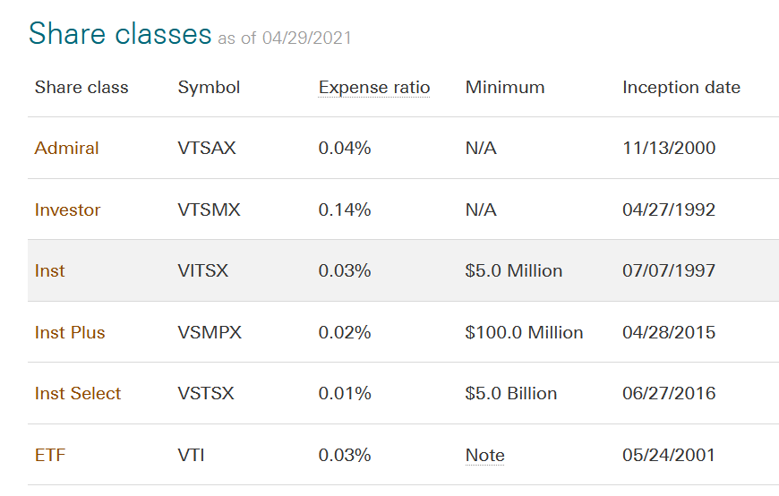

I have decided to write a high level overview I was forced to become familiar with over the past 3 years:
US government incentivized ways to minimize taxes (as of 2022).
This blog will probably be most helpful to someone who is unfamiliar with these tax deductions, has the ability to save a couple tens of thousands a year, and wants to avoid taxes.
My imagined demographic reading this is a tech worker or someone in the financial industries.
The savings per year compound and can have an effect in the low hundreds of thousands by retirement assuming you start in early 20s.
DISCLAIMER: This is not financial advice and you should do your own research. Think for yourself.
I personally think these incentives are extremely convoluted and confusing, but the tax savings are great enough to bare with them.
For example, if one can avoid the marginal tax rate while making $200k a year, one avoids 32% in federal taxes.
There are 4 accounts that are common and relatively easy to open that I will discuss: HSA, 401K, IRA, 529
Also, MAKE SURE TO LOOK THE LAWS UP FOR YOUR SPECIFIC STATE.
Overview
| HSA | Trad. 401K | Roth 401K | Trad. IRA | Roth IRA | 529 | |
| Contribution | ✔ | ✔ | ✔ | state tax | ||
| Distribution | partial | ✔ | ✔ | ✔ |
Trad. is short for Traditional.
- Contribution: The money going into an account has not been taxed, i.e. no income tax on this
- Distribution: The gains in the account are not taxed when withdrawn from the account, i.e. no capital gains
- Traditional: contribution has not been taxed in income (up to a certain point), but distribution is taxed
- Roth: contribution has been taxed in income, distribution is not taxed
Some things to note:
- You can take money out of these accounts "early", but there will be various penalties associated (e.g. paying tax + 10% fee for withdrawing). It is best to not have to do this, so do not put in money you will need to access
- Investments that are not distribution tax free are taxed at and add to an individual's income tax rate at the time of withdrawal. If you are truly retired, you presumably have no other source of income, so these withdrawals would be your only income.
- As long as the money is in the tax-advantaged account, any gains will be tax free (i.e. they are at least tax-deferred) It is only when you start withdrawing that there may be tax/gift implications.
- For the retirements accounts (401K, IRA) early withdrawal fees before you reach "retirement age" (generally over 60, although this will likely increase)
- There are major exceptions to this like the SEPP, which allow you to take money out at any age
HSA
HSA is short for Health Savings Account. The intended purposes of this account is actually as a pre-tax account that is only allowed to spend money on healthcare related items. However, one might be better served by simply not saving it and instead, investing, because this is technically the most tax advantaged account that I know of as it is both pre-tax and post-tax free. Once the owner of the account reaches age 65, it becomes like a traditional IRA that you own, where you can take distributions that are taxed as income, with the added benefit that you can spend it on medical related items (including Medicare premiums) tax free.
One can only open this if you have an High Deductible Health Plan (HDHP, as hinted at by the name, a plan with a high deductible as opposed to a PPO plan).
If you are in your 20s with no dependents and are healthy, then it might be a good idea.
One can calculate the breakeven point between a PPO account and a HDHP pretty easily, and once you hit the deductible for the HDHP, these accounts seem to be equivalent.
As of 2022, one can only contribute $3650 for a single person, and double ($7300) for a family plan.
401K
401Ks are attached to employment for some god-forsaken reason. As of 2022, an employee can contribute $20,500 total between a traditional and Roth account.
There are 3 ways that I know of to exceed this "limit":
- If one has started the 401K later in life, there is a "catch up" mechanism
- One can contribute an additional after-tax (i.e. not pre-tax) $40,500 to a traditional 401K
- The primary reason to do this is the mega-backdoor 401K , which not all plans allow
- Very few plans actually allow for this, unfortunately
- Employers can actually contribute and contribute up to $61,000 into a 401K, but this rarely happens. They will just contribute up to the $20.5k limit.
No access until minimum age 55, although there are major easily Google-able exceptions such as the Substantially Equal Periodic Payment (SEPP) exception. If/when you leave your employment, you can (and likely should) transfer this money into an IRA. 401K plans are generally very restrictive, and some do not allow planholders to take any money out, even if the planholder is willing to pay tax + penalty.
For self-employed people, I would look into a SIMPLE 401K or solo 401K.
IRA
The 2022 IRA max contribution is $6000 between both the traditional and the roth, so it is not a huge account. For people starting these accounts later in life, there is a catch up mechanism that allows them to exceed this limit. IRAs do not allow access without penalty until minimum age 59.5, although there are major easily Google-able exceptions such as the Substantially Equal Periodic Payment (SEPP) exception.
There are income limits for the tax benefits that one can directly receive from contributing from an IRA.
As described in the link, with an income of $140k, one cannot make ANY contribution to a roth IRA, at least directly.
You can avoid all of this difficulty
backdoor Roth IRA
if you are hitting these limits.
This backdoor is analogous to the mega-backdoor for the 401K, but is accessible by everyone and the IRS has released
guidance
on it.
Another important note is that you can convert pieces of a traditional IRA into a Roth IRA at any time with the converted amount counting as income.
When you convert a traditional IRA to a Roth IRA, you will owe taxes on any money in the traditional IRA that would have been taxed when you withdrew it.
That includes the tax-deductible contributions you made to the account as well as the tax-deferred earnings that have built up in it over the years.
That money will be taxed as income in the year you make the conversion.
Ideally, you would make this conversion in a year when you have little to no income (for example, during a long non-compete, when starting your own company, or an early retirement).
Small business owners should look into Rollovers as Business (ROBS).
For self-employed people, I would look into a SIMPLE IRA.
529
This is account is only applicable if you have a family member going to school in the future. This can include unborn children (although one should pore over the tax implications).
- Contributions can be state income tax-deductible (e.g. in Illinois, contributions lead to a tax reimbursement up to $500)
- Money can come out tax free at any time as long as you spend it on "educational costs"
- "educational costs" is a very broad category. This can include purchases such as laptops and private primary schooling
- One can contribute 14k before gift tax
- One can switch beneficiaries tax free up to $70k (14 * 5 years, and double for couples) by "front-loading" or "superfunding"
- One should be aware of potential gift tax consequences
Some Additional Helpful Info
There is a common misconception that ETFs are strictly better/cheaper than mutual funds. Some mutual fund benefits:
- One does not need to worry about execution (granted, you can only execute at EOD)
- Dividend ReInvestment Programs (DRIPs) automatically reinvest your mutual fund dividends
- One can convert mutual fund shares into ETF shares tax free (although not vice-versa)
There is a misconception that mutual funds also always have more taxes, but firms like Vanguard uses "heartbeat" trades to reduce taxes on mutual funds (granted, they can't avoid all taxes). Vanguard has many funds with both mutual fund classes and an ETF class, and for the purposes of a retirement account that does not have to deal with these taxes, ETFs and mutual funds are very close.
Vanguard Example Fund
VTSAX is a fund that is "designed to provide investors with exposure to the entire U.S. equity market".
The below image depicts the different classes of the same fund.

One can see that if you have "institutional" level money (ie $5M), the mutual fund is actually cheaper than the ETF, so if you have $5M invested, you should just do the institutional level.
The mutual fund with the lowest minimum is VTSAX, which has 4 basis points of fees a year, while the equivalent ETF VTI has 3 basis points of fees a year.
If you have 1 million dollars, this will be an additional $100 of fees a year, so it will be a trade-off between DRIP and the extra bp in fees.
One should keep in mind the tax efficiency of the products traded as well (e.g. bonds are not very tax efficient).
End
This was a broad overview of these retirement accounts. I could not go over any concept in depth because there is simply too much to cover, but this should be a good point to start from.
If you see any error in what I said, please email and I will correct it.
Do not email me asking for investment advice, I will not answer.
Thank you Colin R for emailing me corrections.